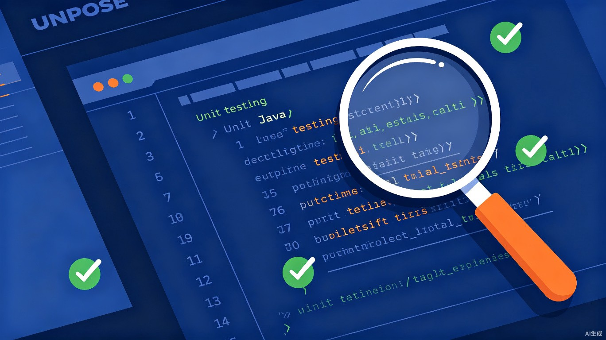

JUnit 4 + Mockito 实战工作坊 · 5 课掌握 Service 层与 Controller 层测试
Agenda · 课程大纲
JUnit 4 + Mockito + Given-When-Then 模式
隔离 Mapper / Redis / JWT — 测自己的逻辑
覆盖矩阵分析 + 边界测试 + 讨论式学习
新建测试类，验证参数透传与返回值
红→绿→重构循环 + 状态守卫案例
3 项作业，Maven 命令 + Mockito 断言速查
Prologue · 前言
不是"锦上添花"，而是工程能力的直接证明
Value · 价值
GitHub 仓库有测试代码 → 证明你懂工程规范，不是"能跑就行"。面试官一看就懂。
"你写过单元测试吗？" — 这是技术面试必问题。有实战经验比背答案强 10 倍。
改一行代码不怕炸掉整个系统。测试全绿 = 放心提交。这是真实工程中的核心能力。
Lesson 1 · 第 1 课
JUnit 4 + Mockito + Given-When-Then
Concept · 概念
核心原则：测试一个类，不测它的依赖。Mapper 不连数据库，Redis 不连真的，JWT 用 static mock 模拟。
JUnit @Test
WorkOrderServiceImpl
assertEquals
@Mock 假的数据库
模拟登录用户
mockStatic(JWT.class)
Framework · 框架
| 依赖 | 版本 | 作用 | 为什么需要 |
|---|---|---|---|
| JUnit 4 | 4.13.2 | 测试运行器 | 提供 @Test、@Before、断言方法 |
| Mockito Core | 3.12.4 | Mock 框架 | @Mock 创建假对象，隔离依赖 |
| mockito-inline | 3.12.4 | 静态方法 Mock | mockStatic(JWT.class) 模拟 JWT 解密 |
| H2 Database | 2.1.214 | 内存数据库 | 集成测试用（本次不涉及） |
📂 位置：ccms-smartleasing-impl/pom.xml 第 109-133 行
Anatomy · 解剖
@RunWith(MockitoJUnitRunner.Silent.class) // ← 使用 Mockito 运行器
public class WorkOrderServiceImplTest {
@Mock // ← 创建假的 Mapper
private CcmsSmartleasingWorkOrderMapper workOrderMapper;
@Mock // ← 假的 Redis
private RedisTemplate redisTemplate;
@InjectMocks // ← 把 Mock 注入到真实对象
private WorkOrderServiceImpl workOrderService;
@Before
public void setUp() {
// 模拟 JWT.decode() 静态方法
jwtMockedStatic = mockStatic(JWT.class);
// 模拟 Redis 中有登录用户信息
when(redisTemplate.opsForValue()).thenReturn(valueOperations);
when(valueOperations.get("ccms:" + TEST_SIGNATURE))
.thenReturn(currency);
}
}关键：@Mock 创建假对象 → @InjectMocks 注入 → @Before 设置默认登录态
Pattern · 模式
@Test
public void testGetWorkOrderByIdSuccessWithPictures() {
// ──── Given（准备）────
CcmsSmartleasingWorkOrder order = new CcmsSmartleasingWorkOrder();
order.setPkWorkOrderId("WO001");
order.setScenePicture("a.jpg,b.jpg,c.jpg"); // 3 张图片
when(workOrderMapper.getWorkOrderById("WO001"))
.thenReturn(order); // ← Mock 返回
// ──── When（执行）────
Result<CcmsSmartleasingWorkOrder> result =
workOrderService.getWorkOrderById("WO001", TEST_TOKEN);
// ──── Then（验证）────
assertEquals(10000, result.getCode()); // 业务码
assertNotNull(result.getData()); // 数据不为空
assertEquals(3,
result.getData().getScenePictureList().length); // 图片已拆分
}核心模式：Given（准备数据 + Mock）→ When（调用方法）→ Then（断言结果）
Lesson 2 · 第 2 课
隔离 Mapper / Redis / JWT — 只测自己的业务逻辑
Pattern · 模式
// 返回单个对象
when(mapper.getById("WO001"))
.thenReturn(order);
// 返回 null（不存在）
when(mapper.getById("WO999"))
.thenReturn(null);
// 返回列表
when(mapper.getAllByPage(
any(Page.class), anyString()))
.thenReturn(mockList);// 验证被调用过
verify(mapper).getById("WO001");
// 验证调用次数
verify(mapper, times(2))
.updateById(any());
// 验证从未调用（参数校验失败）
verify(mapper, never())
.insert(any());Pattern · 模式
// @Before 中默认设置
Currency currency = new Currency();
currency.setLoginId(42);
when(valueOps.get(
"ccms:" + TEST_SIGNATURE))
.thenReturn(currency);// 在测试方法中覆盖
when(valueOps.get(anyString()))
.thenReturn(null);
// → 期望返回 INVALID_TOKEN// 需要 mockito-inline 依赖
MockedStatic<JWT> jwtMock =
mockStatic(JWT.class);
jwtMock.when(()
-> JWT.decode(TEST_TOKEN))
.thenReturn(decodedJWT);
// 务必在 @After 中释放！
@After
public void tearDown() {
jwtMock.close();
}Lesson 3 · 第 3 课
覆盖矩阵分析 → 定位缺失场景 → 动手补写
Coverage · 覆盖
| 方法 | Happy Path | 资源不存在 | Token 无效 | 参数校验 | 状态守卫 |
|---|---|---|---|---|---|
| addWorkOrder | ✅ | — | ✅ | ✅ 长度/图片数 | — |
| getAllWorkOrders | ❌ | — | ❌ | — | — |
| getWorkOrderById | ✅ 含图片拆分 | ✅ | ❌ | — | — |
| getWorkOrderByPage | ✅ | — | ✅ | ✅ 默认分页 | — |
| acceptWorkOrder | ✅ | ✅ | ✅ | — | ✅ 3 种非法状态 |
| completeWorkOrder | ✅ | ✅ | ✅ | ✅ 结果长度 | ✅ 1 种非法状态 |
| evaluateWorkOrder | ✅ | ✅ | ✅ | ✅ 评分范围 | ✅ 1 种非法状态 |
| cancelWorkOrder | ✅ | ✅ | ✅ | — | ✅ 1 种非法状态 |
| deleteWorkOrders | ✅ | — | ✅ | ❌ 边界情况 | — |
❌ 红色行 = 缺失测试。Service 层缺 3 个场景，Controller 层 完全没有测试。
Discussion · 讨论
@Override
public Result getAllWorkOrders(
String token) {
return Result.success(
workOrderMapper.getAll());
}⚠️ 没有 Token 校验！
⚠️ 没有数据权限过滤！
讨论题：这是一个 Bug 还是设计选择？如果接口只在内部服务间调用（有网关鉴权），是否可以接受？
Lesson 4 · 第 4 课
从零开始 — 新建 WorkOrderControllerTest.java
Comparison · 对比
Controller 方法逻辑往往只有一行：return xxxService.xxxMethod(args); — 我们验证的就是这一行。
Template · 模板
@RunWith(MockitoJUnitRunner.class)
public class WorkOrderControllerTest {
@Mock
private WorkOrderService workOrderService; // ← 只 Mock 这一个！
@InjectMocks
private WorkOrderController workOrderController;
@Test
public void testGetAllWorkOrders() {
when(workOrderService.getAllWorkOrders(TEST_TOKEN))
.thenReturn(Result.success());
Result result = workOrderController
.getAllWorkOrders(TEST_TOKEN);
assertEquals(10000, result.getCode());
verify(workOrderService)
.getAllWorkOrders(TEST_TOKEN); // ← 验证调用了
}
}📂 新建路径：src/test/java/.../controller/WorkOrderControllerTest.java（与 Controller 同包，在 test 目录）
Lesson 5 · 第 5 课
用测试复现 Bug → 定位代码 → 修复 → 验证
Workflow · 流程
新测试运行失败 🔴
红找到出问题的行
🔍修改业务逻辑
✏️新测试通过 🟢
绿确保无回归 🟢🟢🟢
mvn testCase Study · 案例
@Test
public void testComplete_AlreadyCompleted() {
// Given: 工单状态已是 "2"
CcmsSmartleasingWorkOrder order =
new CcmsSmartleasingWorkOrder();
order.setPkWorkOrderId("WO001");
order.setWorkOrderStatus("2");
when(mapper.getById("WO001"))
.thenReturn(order);
// When: 再次完成
Result result = service.completeWorkOrder(
"WO001", "再次维修", TEST_TOKEN);
// Then: 应该返回非法状态
assertEquals(
CodeMsg.INVALID_STATUS_TRANSITION.getCode(),
result.getCode());
verify(mapper, never()).updateById(any());
}状态守卫：只有状态 "1" 的工单可以完成。状态 "0"、"2"、"3"、"4" 都不允许。
Assignment · 课后
3 项作业 + Maven 命令速查 + Mockito 断言速查
Homework · 作业
mvn test -pl ccms-smartleasing-impl
mvn test -pl ccms-smartleasing-impl \
-Dtest=WorkOrderServiceImplTest
mvn test -pl ccms-smartleasing-impl \
-Dtest=WorkOrderServiceImplTest#testMethodName// 设置返回值
when(mock.method(args)).thenReturn(val);
when(mock.method(args)).thenThrow(ex);
// 验证调用
verify(mock).method(args); // 1 次
verify(mock, times(n)).method(); // n 次
verify(mock, never()).method(); // 从未
// 参数匹配器
any() / anyString() / any(Class)
eq(val) / isNull()
// 参数捕获
ArgumentCaptor<T> cap = forClass(T);
verify(mock).method(cap.capture());
T val = cap.getValue();assertEquals(expected, actual);
assertNotNull(object);
assertNull(object);
assertTrue(condition);
assertFalse(condition);打开 IDE，找到 WorkOrderServiceImplTest.java，从第 1 个作业开始。
smartleasing-service/.../test/.../WorkOrderServiceImplTest.javadocs/02_workorder_unittest_lesson.mdgit checkout -b 开练习分支